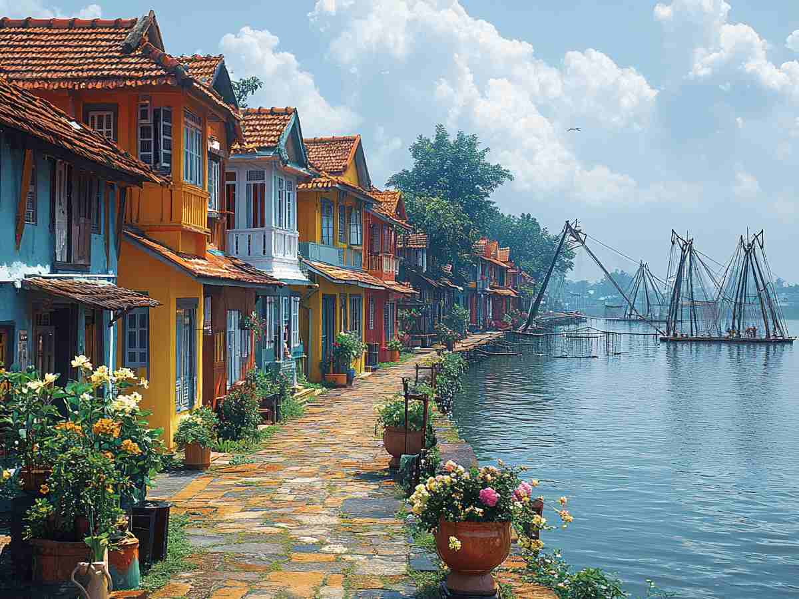
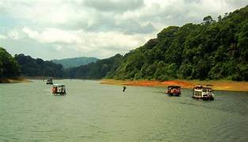
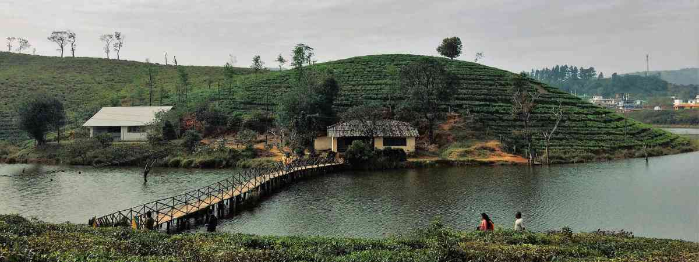
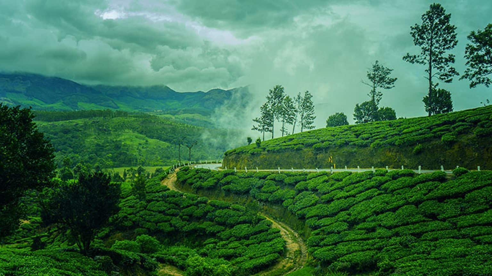

October – February
Heritage & Beach Destination
Fort Kochi is a historic coastal town famous for its colonial architecture, Chinese fishing nets, art galleries and rich cultural heritage. It is one of Kerala's most visited tourist destinations.


